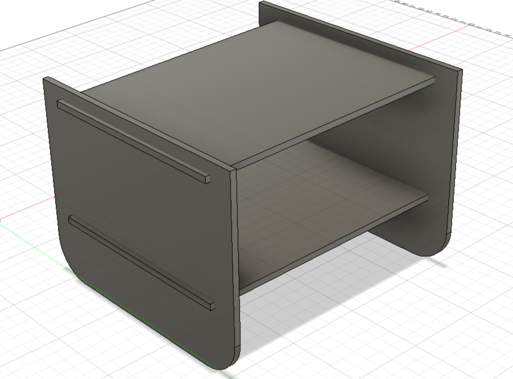
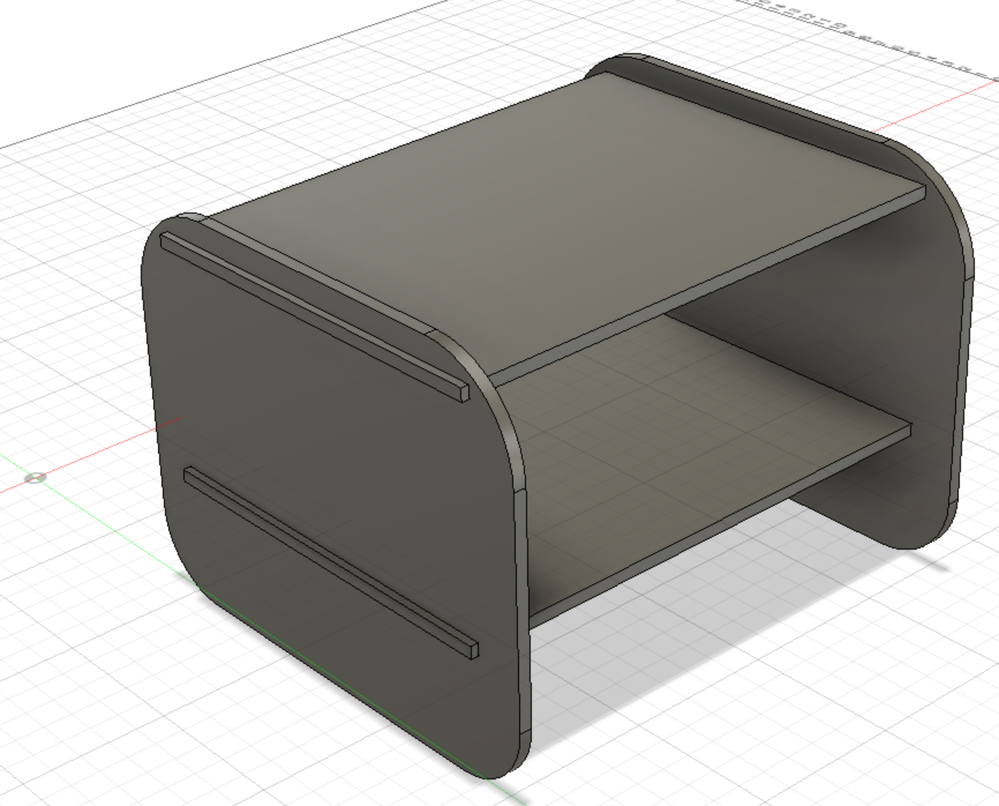
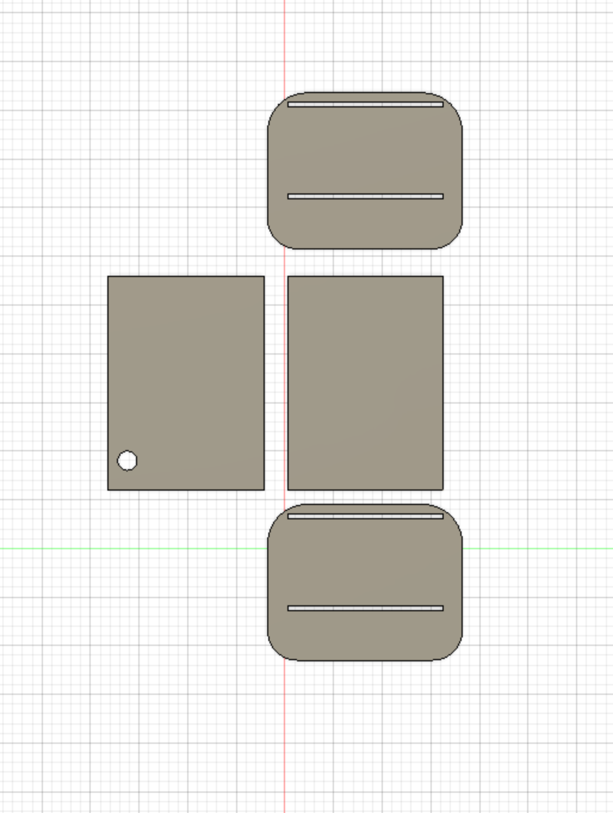
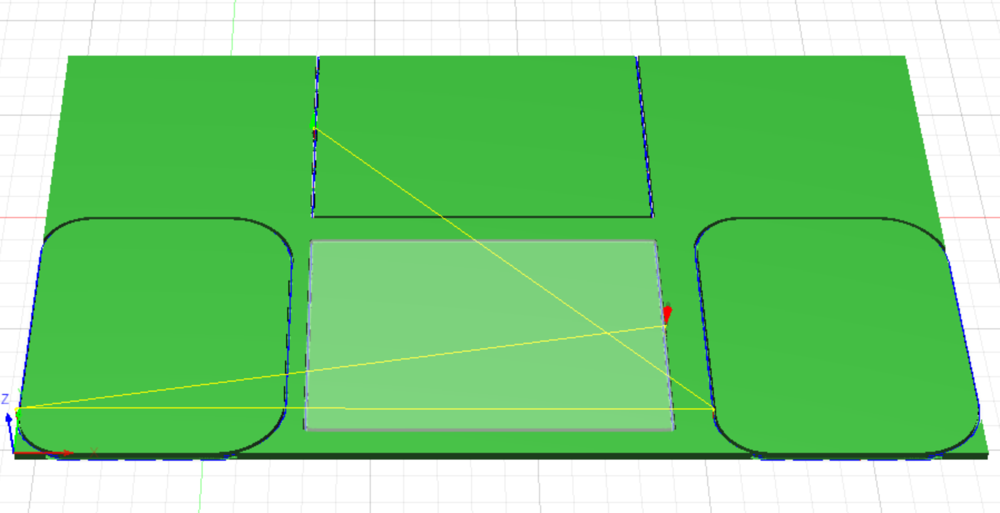

Week 9
Make something big!
This week's assignment is to design and fabricate something big by using a CNC machine.
Personal Project
First things first, I sat down and figured out how and what I wanted to make. Since I havent found the time to go and buy a side table for my room yet, I think i will be making one of those.
The pieces of wood available to us are 2 feet by 4 feet by 1 cm so it seems to be the right size for a side table. I first started by sketching what I needed to 3d design.

After sketching, i realised that i might not be able to make circular cuts on the side of the table so I need to make a different type of cut to figure this out.
After much work in Fusion, i figured it out.
First I defined the user parameters.

I started building the table with the folowing steps:




This is what it finally looked like:

I moved the pices for the CNC machine to cut.

I then went to manufacturing and used the 2D adaptive clearing and 2d contour to cut the model.
The contour cut:
The adaptive cut:

Group Project
For our group assignment this week, we tested the capabilities of our mill. We did this by designing and milling out two pieces that used three different tool paths and fit together using dogbones. We will be using Axiom Precision AR4 PRO CNC machine. Our Fablab also has a 5 axis ShopBot CNC, however, for this assignment we will be using Axiom.
Runout
Run out is a term describing the inaccuracy in the end mill as it rotates. It means that as it rotates it doesn't rotate completely in line witht the proper axis of the mill. We tested this by drilling a hole in our designs and measuring it to see if it lines up with the width of our mill. We found that for our machine it did line up well. If this didn't work then we were in a situation where we couldn't assume that the mill is actually doing what we want.
Alignment
Allignment in regards to our mill can mean alot of different things. It can mean that the moving arms are properly alligned with the bed. It can also mean if the board you are cutting is properly alligned with the bed. In both of these instances if you have a problem you can end up in a situation when you drill down it doesn't actually drill anywhere near where you expected.
Speeds
This is talking about two things. One is the speed of the bit as it traverses over the board. The taverse speed isn't too important so long as it isn't going to fast that your machine can't do it, and that your bit is traversing at a high enough hight that it doesn't break anything. The second is roational speed of the bit and is much more important. This is dependent on the bit that you are using to cut, and should be determined using the product number on the bit. If you don't have the proper speed then you can end up with a situation where the bit either doesn't cut or it goes far too fast and breaks the bit.
Feedrates
This is talking about the speed of the bit as it cuts through the wood. This is dependant on two things one being the bit that you are using. Dependent on the bit you have to make sure your speed is matched properly. Even more so then the bit it also matter on the toolpath that you are using. If your feed rate is too slow, then you can cause a fire, and if it is two fast then you can snap a bit.
Toolpaths
Tool paths work to tell your machine what sort of operation to do. There are tool paths for cutting something out of your board. There is another one that cuts a pocket our of your board, and yet another that drills a hole in your board. These are the three tool paths that our group tested but there are several more. Tool paths are important because they determine what sort of speeds and feeds, and bits even that you want to use.
Instead of having lots of different files for each test, we designed an all-in-one test that allows us to check all of the above mentioned attributes. Moreover, we checked the G-Code of each file post processed. For this group project assignment we used the VCarve software. Why? Beecause it is really simple to use and it is really efficient in what we are trying to do for this group assignment. we have designed two interlocking pieces with some drill holes on them. The interlocking mechanism will check both the alignment and runout. The holes will check runout and the dimentions of the pieces will check alignment. For the speeds and feedrates we have picked different tools and settings and checked the G-code.